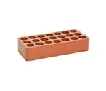

Tijolo Martins Laminado 24,5x11,5x5,5cm Rústico  Preço: R$ 4,00 Descrição do produto Tijolo Martins Laminado 24,5x11,5x5,5cm Rústico
Mais características: Material: cerâmico Largura: 5,5 cm Peso: 1500 g Altura: 24,5 cm cor: natural Acabamento: rústico comprar